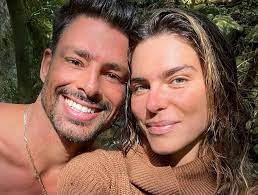

Fofocas

Resumo BBB 23 de 19/4: madrugada tem troca de farpas após Paredão e festa com cooler pelo Top 5
Dessa vez, foi formado um Paredão Duplo, e Larissa e Ricardo disputam a preferência do público. A votação está aberta! Ao longo da madrugada, os brothers também comemoraram o Top 5 com um cooler, e a emoção foi tanta que eles chegaram a pular na piscina!

Cauã Reymond e Mariana Goldfarb se separam após quatro anos: "Momento delicado".
Acabou! Mariana Goldfarb e Cauã Reymond se separam e modelo revela detalhes: confira.
O casamento de Cauã Reymond e Mariana Goldfarb chegou ao fim nesta quarta-feira (19). Nas redes sociais, a modelo revelou que os dois estão separados após quatro anos de casamento, surpreendendo fãs e seguidores.
Mariana publicou um texto falando abertamente sobre o fim do relacionamento, mas evitou dar detalhes. Na declaração, não há sinal de um motivo que teria causado a separação, assim como não há menção sobre os dois seguirem como amigos, tradicional em textos do tipo.
.jfif)
Há quatro anos sem beijar na boca, Joelma afirma: ‘Gosto de homem feio’
Cantora falou que pegar Covid-19 cinco vezes não foi o único motivo de não estar se relacionando com ninguém
A cantora Joelma, que está há quatro anos sem beijar na boca, revelou que a Covid-19 não foi o único motivo que a fez não se relacionar com ninguém. Em uma recente participação no programa “OtaLab”, a artista disse que testar positivo cinco vezes para o coronavírus durante a pandemia, atrapalhou sua vida amorosa, pois foi internada e teve que lidar com várias sequelas. Após o assunto repercutir, a dona do hit Isso é Calypso confessou que não ficou sem beijar apenas por isso. “Não encontrei a pessoa certa. Tem que ser um negócio sério… tem que ter muita conexão, beijo é algo muito especial. Beijar por beijar, não beijo não”, disse ao programa “Fofocalizando”, do SBT. Questionada sobre o perfil de homem que a atrai, Joelma afirmou que tem um gosto peculiar: “Eu gosto de homem feio”.